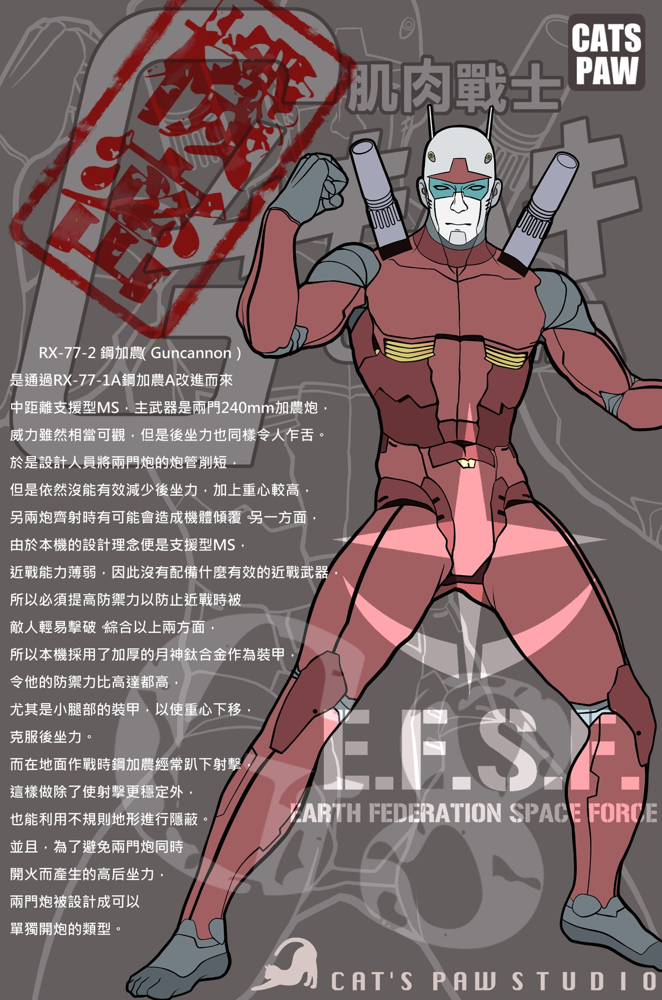
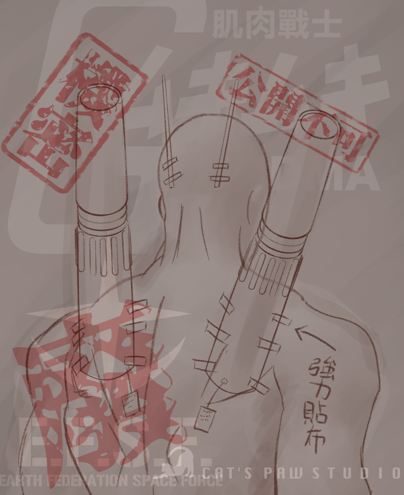

肌肉戰士ムキムキ第二彈~!!ムキムキのキンキャノン。
肌肉戰士キンダムに登場するキンキャノンをマスターグレードで商品化。変形可能なコアファイターとエンジンメカを再現したコアブロックが付属。肩蛇腹構造は3分割を再現。
頭部、脚部、バックパック、内部メカ再現。
キャノン砲発射態勢用可動手首付属。肩部キャノン砲は?脱式。キャノン砲と交換可能なミサイルポッド付属。スネ横に手榴弾収納可能。専用ビームライフル付属。(本品は組立てキットです。)
以上都是瞎掰，並沒有~!! 就是畫爽的。
子貓玲/CoNeCoLin | Original Date: 2022-09-11 15:15:34
FB:子貓玲/CoNeCoLin
作品細節 / 輔助媒體



© 2025 CoNeCoLin. All Rights Reserved.
All content on this website is original work by CoNeCoLin. No reproduction, distribution, distribution, commercial use, or use for AI training is permitted without written authorization. For collaboration, licensing, or commercial inquiries,
please contact us through the information provided on this website.